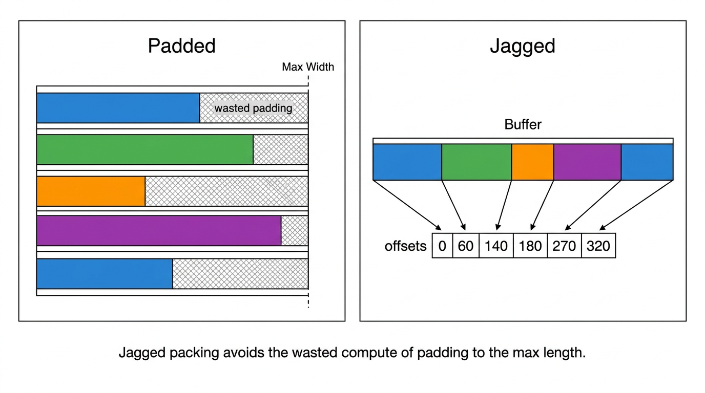
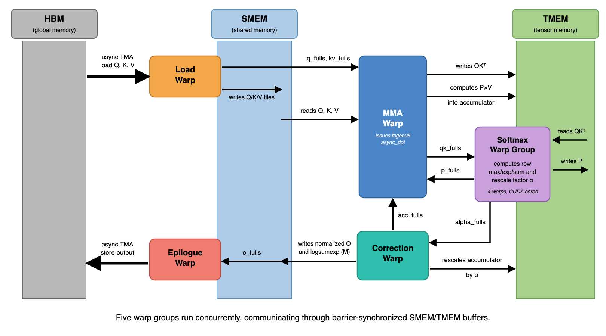
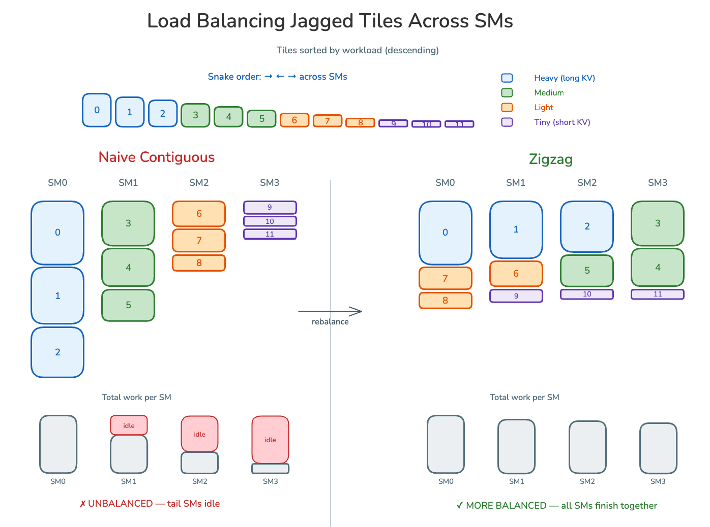
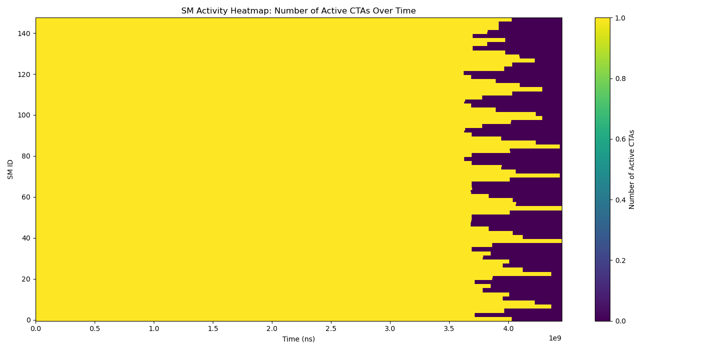
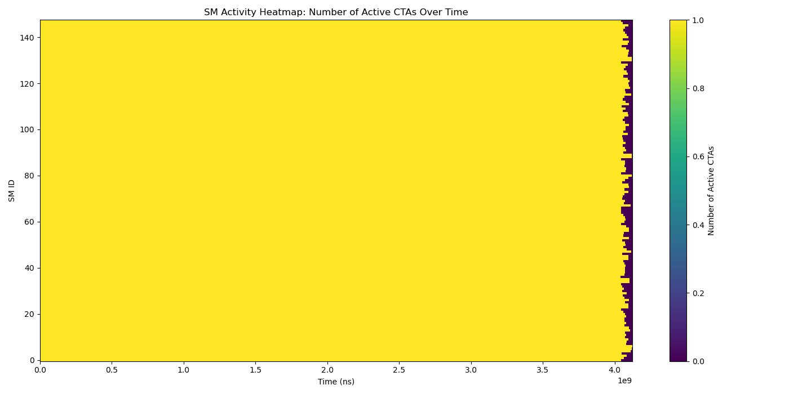
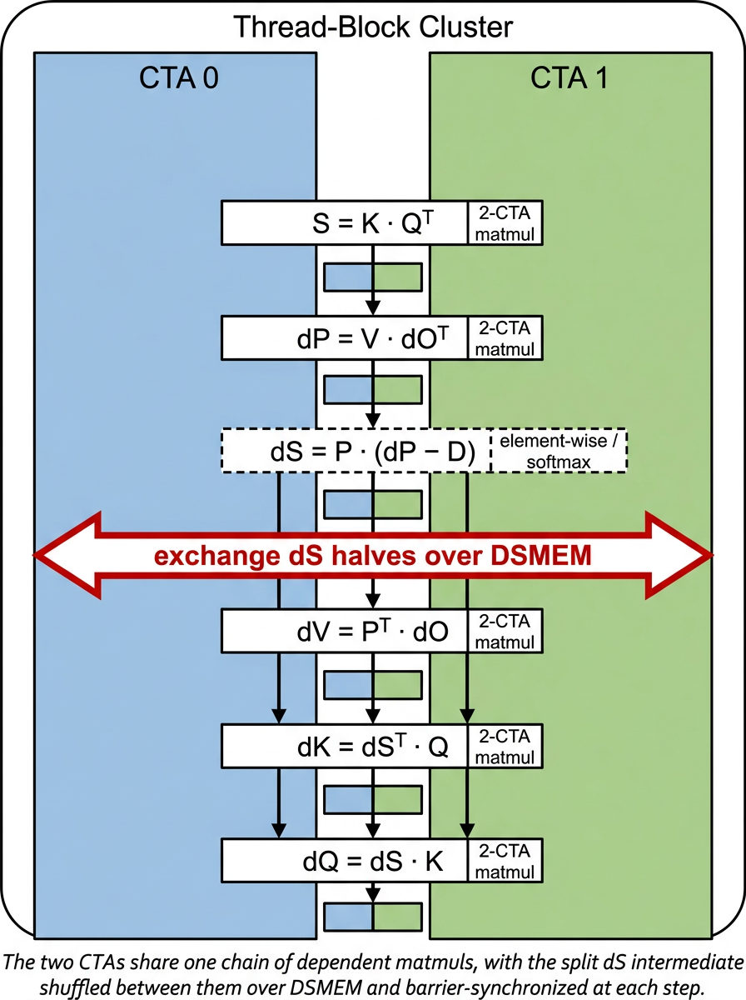
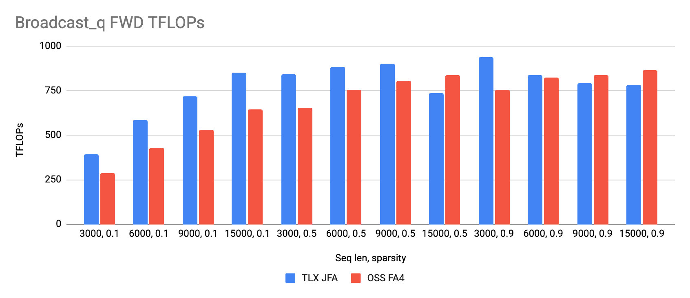
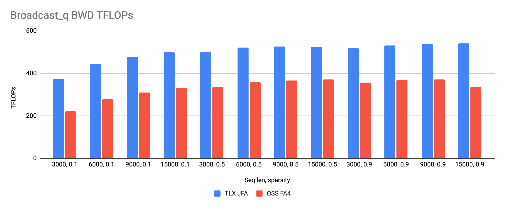
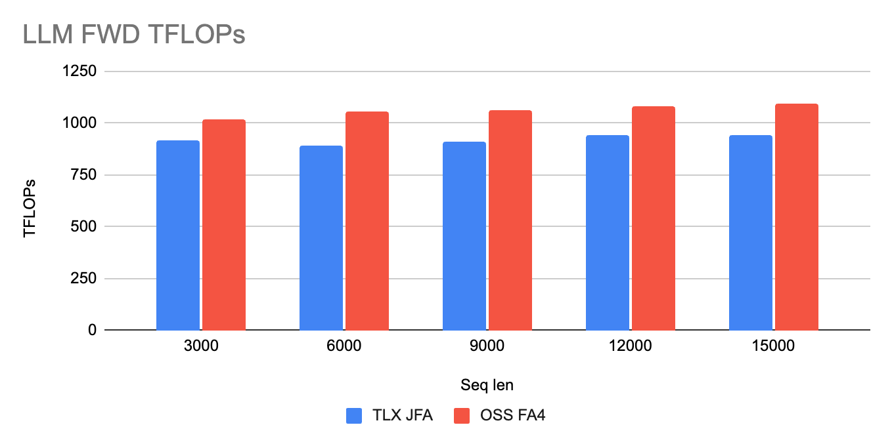
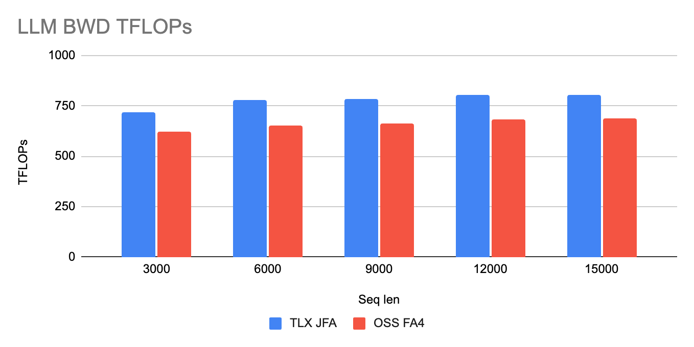

Meta的广告模型GEM把attention跑在锯齿（变长）用户序列上，padding最多浪费50%算力。Jagged Flash Attention是让它高效的内核机制，而attention正是GEM里最慢的kernel。
这篇PyTorch博客讲Meta团队怎么用TLX（Triton Low-level Extensions）在Blackwell B200上把JFA重写到SOTA：3.2K行Triton级代码，对打约10K行手写CuteDSL的FlashAttention-4。下面拆开结构性变化和六个优化。
Meta的广告模型（GEM和Kunlun架构）把attention跑在锯齿用户序列上。把这些序列pad到固定长度最多浪费50%算力，GEM的做法是把序列连续打包，用一个offsets张量记录每条序列的边界。
Jagged Flash Attention就是让这个无padding表示高效的内核机制：直接对打包的Q/K/V张量和offsets应用FlashAttention算法，永远不实例化pad token。前一篇GEM训练深挖讲的是训练系统层面，这篇聚焦把底层attention kernel在Blackwell上优化到顶。

优化Blackwell上的attention要同时解决两个问题。性能：attention是GEM里最慢的kernel，只有全局内存加载、softmax和matmul紧紧重叠才能打满吞吐。迭代速度：attention是新模型想法落地的第一站（滑动窗口、块稀疏等变体），kernel得好改。
起点是一个成熟的Triton JFA kernel，算法正确，但片上数据搬运和调度全交给编译器：shared memory分配和管线深度不可控，没有显式barrier和warp特化，一组同质warp同时做加载、softmax和matmul，不在发MMA时tensor core就空转。生产场景是broadcast-Q：一个稠密Q广播给batch里每条序列，它的梯度dQ要跨整个batch求和，dQ epilogue变成竞争激烈的跨program规约，好几个优化就是为它做的。
在Blackwell上打满吞吐意味着tensor core不能断粮。纯Triton把大部分决策留给编译器，TLX把它们暴露成一等原语：显式SMEM/TMEM分配、async_task warp特化、barrier、异步TMA和MMA、CLC。
这篇的工作分两类：结构性变化是TLX重写带来的地基重组，改变工作和内存在CTA的warp之间怎么排布；优化是在这个结构上继续挤性能，主要是消停顿和消浪费。每个优化都按它掐的瓶颈来讲，而不是按实现细节。
warp特化、显式shared和tensor内存管理、barrier流水是任何高性能Blackwell attention kernel的标准配方，TLX的价值是能用高级Triton代码表达它们，而不是手写CuteDSL或CUDA。这也是后面优化能快速原型的底气。具体做法是把CTA拆成五组warp：Load Warp（异步TMA从HBM拉Q/K/V进SMEM）、MMA Warp（发tcgen05 async_dot）、Softmax Warp Group（4个warp跑CUDA core算row max/exp/sum和rescale因子）、Correction Warp（按因子重缩放累加器）、Epilogue Warp（异步TMA把输出写回HBM）。
内存和调度同样显式：每个片上buffer手工分配并选管线深度（比如K/V三缓冲让加载warp超前跑），生命周期不重叠的TMEM buffer做别名复用（QK分数、P和softmax统计量共享一块，PV累加器独立），warp之间经显式生产者消费者barrier交接数据。五组warp并发跑，靠barrier同步的SMEM/TMEM buffer通信。

锯齿输入让SM间负载严重不均：序列长度差数量级，朴素的tile到SM映射让部分SM空转、部分SM啃长序列。SM占用热力图看得很直观：几行一直热，其他早闲了。真正贪心的重平衡接近最优但没法向量化，host开销爆炸。
前向的外层循环是稠密Q、内层是锯齿K/V，tile代价正比于它所属batch的key长度，tile极不均匀。作者的办法：在host把tile按KV工作量降序排，用之字形（boustrophedon）发给SM，偶数轮从左到右、奇数轮从右到左。反向要换策略：dK/dV那一遍外层是K/V块、内层是稠密Q，tile代价大致均匀，但每batch的tile数随锯齿key长度变，排序没用，改成预计算有效的(batch, head)列表。

静态均衡处理能提前预测的偏斜，运行时才暴露的残差交给Cluster Launch Control。CLC是Blackwell特性，按需发下一个tile序号，谁先做完谁领活，没有长序列卡住整个grid。软件均衡和CLC看似重复实则互补：CLC是动态的但分不清空tile，锯齿（尤其稀疏）输入里padding引入的哨兵空tile它照样发，而host侧的有效tile预计算提前把这些剪掉了。

开了CLC之后热力图几乎全黄到最后：所有SM一起收工，长尾消失。TLX里CLC是一个轻量的生产者消费者协议，走共享调度上下文，前向反向两个kernel都用。

Triton-MPP的barrier分析把反向的dQ epilogue钉为头号瓶颈：它向HBM的reduce-add吃掉约9到11%的tensor-core利用率，是最大的可行动缺口。慢有两个原因：dQ跨整个batch求和，所有SM往同一个dQ位置发reduce-add，竞争激烈；高级reduce-add API把事情串行化了。
解法是显式的双缓冲SMEM暂存：一片的reduce-add到HBM和下一片从TMEM拷出重叠，永远有store在飞：
同一个分析从TMEM侧解释了epilogue为什么卡住数学部分：reduction warp要攥着dQ的tensor-memory buffer直到所有切片都排空到HBM，MMA warp在dq-empty barrier上等着，没法开始下一个tile的dQ matmul。一个瀑布测试直接删掉dQ store验证了这一点，挽回8到11%的tensor-core利用率。
改进是把最后1到2个切片先预加载进寄存器，提前释放TMEM buffer再发它们的store，MMA warp就能在reduction warp写HBM的同时开始复用那块内存。提前释放几个切片是autotune的（1或2），最优值很小，因为放多了寄存器压力反噬。和双缓冲暂存配合，MMA warp在上一个tile的dQ还没写完时就开始下一个tile的dQ matmul。
NCU显示前向是MMA发射饥饿，不是内存或算力瓶颈：tensor-core（TMEM）管线利用率约57%，同形状FA4约82%，丢的周期来自softmax warp开销冒泡进MMA发射间隙。ptxas dump和NCU还看到寄存器溢出（local-memory流量），早先一轮多给warp寄存器就把那流量砍了约40%、前向涨约6%，压力是实的。
最坏的元凶是KV循环里每迭代一次的mask分支，而它只在部分tile的尾巴上有意义。代价的根源很微妙：Triton/TLX给变量静态分配寄存器，热循环里的mask分支迫使编译器为只在很少走的masked路径用的变量（列偏移、mask张量、select）预留寄存器，贯穿整个循环，永久抬高寄存器压力，寄存器大户softmax warp最受伤。
修法是把循环剥成无分支的主体加一个小mask尾巴。mask标志是编译期常量，主体里根本没有mask变量，编译器释放那些寄存器，MMA发射节奏收紧。前向和反向的softmax循环都剥，反向专门把正确性mask本来要加的约9%延迟抢回来。
反向是matmul重型：每个K/V块要算dQ、dK、dV共五个GEMM，单个CTA喂不饱Blackwell的tensor core。直接采用FA4的2-CTA（paired-CTA tcgen05）方案：cluster里两个CTA协作做一个更宽的协同matmul，覆盖同一(batch, head)的两个相邻K/V块，累加器行在两个SM上分。
作者自己的部分是TLX实现：把这套搬到锯齿加broadcast-Q布局，跑在自家的persistent和CLC多tile调度器下。限定生产场景broadcast-Q、HEAD_DIM=128，比单CTA路径反向吞吐加约12%（延迟降11%）。

基准在B200、bf16，两个场景：生产锯齿（HSP，broadcast稠密Q对锯齿K/V）和LLM式dense（等长Q/K/V），对手是2026年5月版开源CuteDSL FlashAttention-4。锯齿形状是广告业务真正关心的：前向在多数形状和稀疏度上更快，平均约13%（只在最长序列加高密度时落后）。

反向全胜，平均约50%。锯齿图从稀疏度0.1（长度极不均）扫到0.5再到高密度，TLX的优势在长度越不均时越明显，正好对应负载均衡优化掐的瓶颈。

LLM式dense（B=768、H=4、head_dim=128）：前向TLX约FA4的87%，基本打平。dense前向是FA4的主场，TLX没输太多。

反向TLX反超约17%。反向的2-CTA协作MMA和dQ优化在dense依然有效。

建在TLX上的实际好处是kernel够结构化，fork新需求不用重写。因为warp特化、内存分配、barrier、调度都是一次写好的可读Python级代码，换数值格式或attention模式主要改数学部分，不改机器。两个变体说明这点。
FP8容忍的训练做了microscaling-FP8变体：把BF16 matmul换成TLX的块缩放MMA（FP8 E4M3数据加E8M0逐块缩放），复用同一套warp特化骨架、barrier和TMEM布局。softmax输出P在线量化到FP8，缩放因子放tensor memory让块缩放MMA直接吃。调优后MXFP8前向超过FA4自己的FP8 kernel，反向在dense追平FA4，都大幅超过BF16基线，主要靠换GEMM调用而不是改kernel结构。
长锯齿历史里O(N平方) attention占大头时，用两阶段稀疏变体：便宜的打分kernel对每个Q/K块做平均池化，按Q块选top-k最相关的KV块（选择比可调）；从dense版fork的TLX attention kernel加逐tile稀疏块迭代，只在选中的块上跑attention。
它复用同一套warp特化结构、CLC调度和软件负载均衡（这里用来跳过未选中和空tile），对PT2友好，照样支持broadcast-Q、GQA和滑窗。选择比0.5时前向比dense快约1.3到1.5倍。两个变体合起来看：kernel主体原样搬，只改数学（GEMM精度，或每个tile访问的KV块集合），这就是TLX的实际回报。
参考：https://pytorch.org/blog/optimizing-jagged-flash-attention-with-tlx-the-road-toward-sota-fa4-on-blackwell/